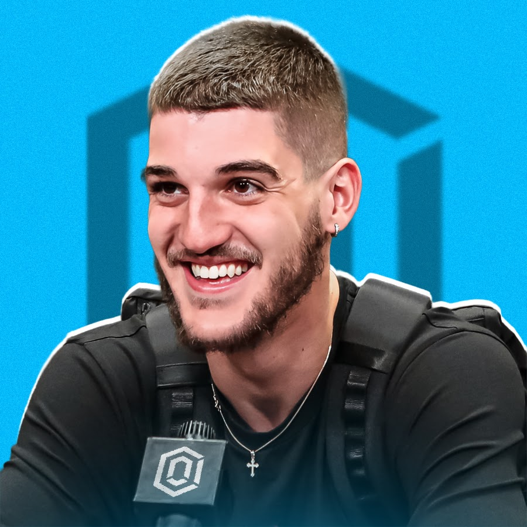
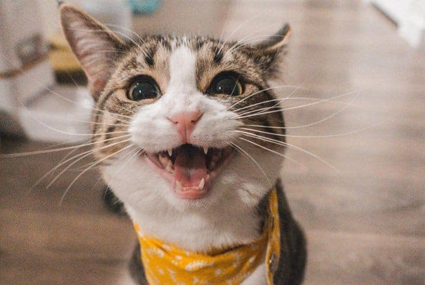

Em quem eu me inspiro
Caio Teixeira

Caio Teixeira é um YouTuber que produz conteúdos relacionados ao basquete, como partidas, vlogs em cidades dos Estados Unidos, gameplays e vídeos educativos sobre como jogar. Ele também compartilha técnicas, treinos e os principais fundamentos do esporte.
Ele me inspira porque demonstra que é possível aprender e evoluir no basquete de uma maneira divertida e motivadora. Seus vídeos mostram a prática do esporte de forma descontraída, despertando minha vontade de aprender, treinar e melhorar cada vez mais.
Alanzoka é um streamer e criador de conteúdo que produz vídeos e transmissões ao vivo de diversos estilos de jogos, seja sozinho ou acompanhado de seus amigos. Seus conteúdos são marcados pelo bom humor, pelas reações espontâneas e pelas situações engraçadas que surgem durante as partidas.
Ele é uma inspiração para mim porque consegue transformar praticamente qualquer jogo em um momento divertido, mesmo quando enfrenta dificuldades ou frustrações. Isso me ensina a encarar os desafios com mais leveza, não levar tudo tão a sério e encontrar diversão até nas situações mais inesperadas.
Alanzoka
Meus professores

E aqui são os meus professores, que desde o começo das aulas nos ensinam e motivam a seguir os nossos caminhos. Sou muito grato por cada aprendizado compartilhado e experiências vividas juntos.